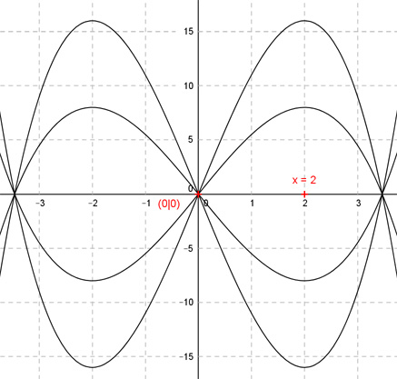

Aufgabe 58 Die Graphen von ganzrationalen Funktion 3. Grades sind punktsymmetrisch zum Koordínatenursprung und haben an der Stelle x = 2 einen Extremwert. Wie lautet deren Funktionsgleichung? Allgemeine Form einer zum Koordinatenursprung punktsymmetrischen ganzrationalen Funktion 3. Grades: f(x) = ax3 + cx f’(x) = 3ax2 + c f’’(x) = 6ax 1. Ist punktsymmetrisch zum Ursprung bedeutet: f(0) = 0 --> a * 03 + c * 0 = 0 --> 0 = 0 liefert kein Ergebnis Nur scheinbar 2 Bedingungen vorhanden --> Kurvenschar 2. Hat an der Stelle x = 2 einen Extremwert bedeutet: f’(2) = 0 --> 3a * 22 + c = 0 --> 12a + c = 0 |-12a --> c = -12a Gesuchte Funktionsgleichung: f(x) = ax3 - 12ax Darstellung für 4 verschiedene a. Von oben nach unten: a1 = 1 a2 = 0,5 a3 = -0,5 a4 = -1 